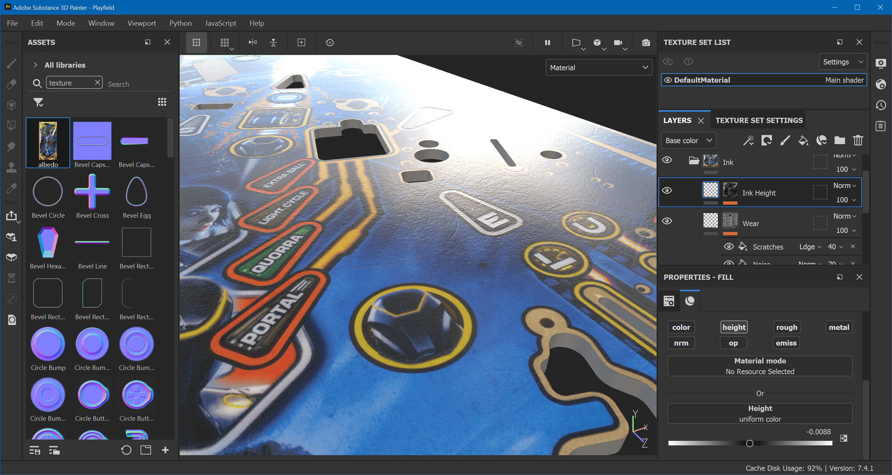

Texturing
We'll be creating a rather sophisticated material for our playfield. There will be a bunch of different materials, which altogether will result in a PBR texture set that we can use in Unity.
Start up Substance Painter. Select File -> New and use the PBR - Metallic Roughness Alpha-blend template. Set the document resolution to 4096 and select the FBX file exported from Blender. Save your project as Playfield.spp.
Note
We don't need any baking in this tutorial, so we'll skip it to keep the file size smaller. However, if you would use any smart materials in your texturing, baking at least the curvature map and thickness map is required for the material to work correctly.
Setup
Let's start by masking out the top surface and the plywood edge. Under Layers, delete Layer 1 and create two folders. Name them Edges and Surface.
- Right-click on the Surface layer and choose Add white mask
- Hit
F1to see both the 3D view and UV tile - Select the Polygon Fill tool
- Set the color under Properties or in the top toolbar to black
- Draw a rectangle over the UV tile's left border to fill the edge polygons
- Alt-click on the mask to verify that only the left border is black:
Do the same for the Edges layer, but invert the mask:
- Right-click on the Edges layer and choose Add black mask
- Set the color to white
- Draw a rectangle over the UV tile's left border to fill the edge polygons
- Alt-click on the mask to verify that only the left border is white:
Hit F2 to show the 3D view only, and switch back from Mask to Material in the drop-down of top right corner.
Ink Material
Create a new folder inside of Surface and call it Ink.
Albedo
Inside of Ink, create a fill layer and name it Albedo. Under Properties, Alt-click on color to make it albedo only. Grab albedo.png from your file system's explorer and drag and drop it into the Assets panel (on the left side).
In the import dialog, click on undefined and select texture. At the bottom select to import to project 'Playfield'. Drag albedo from the assets panel into the Base color channel of the Albedo layer. Finally, right-click on the layer and select Add anchor point.
Height and Roughness
We're going to stack three effects on top of each other:
- In a CMYK printing process like a playfield, each color gets applied on top of each other. What we can do to mimic this effect is to grab the grayscale image of the albedo and interpret it as height map, where black is highest and white lowest.
- Ink is never applied perfectly evenly, so there are little bumps that should be visible.
- A playfield that has been in use has micro scratches from the ball.
But first, let's set the base values. Just above the Albedo layer, create a new fill layer and call it Base Height/Roughness. Under properties, Alt-click on height and click on rough. Set the height to 0.004 and the roughness to 0.15.
Noise and Scratches
Now we're going to add another layer that contains the ink imperfections and the micro scratches.
- Add a new layer above Base Height/Roughness and call it Wear.
- In the Properties panel,
Alt-click on height to make it only affect the height. - Set
Heightas uniform color to-0.1. - Right-click on the layer and add a black mask.
- Add a fill effect to this mask and call it Noise.
- Click on grayscale and search for Fractal Sum 1.
Zoom in a bit and use Shift+Mouse Right to rotate the environment map. Move the light source in front of you so you see the reflection the height is causing.
Now, this is way too much noise, but it allows us to tweak it better before we tune it down. The first thing to do is not to UV-project, which is the default. In general, you should only UV-project when you know that the aspect ratio of your UV mapping is correct, which isn't the case here.
So, the Noise effect still selected, change the Projection under Fill to Tri-planar projection. You'll immediately notice how the noise is less skewed.
Then, the size of the bumps is way too high as well. Still under Properties, look for UV transformations, and set the scale to 5. Finally, make the effect more subtle by selecting the Wear layer (not the mask), and changing the Height at the bottom of Properties from -0.1 to -0.01.
That's better. Now let's add some scratches. Click on the mask of Wear again, and add another fill effect, above Noise. Call it Scratches. You'll notice that this makes the noise disappear, but that's fine for now. Under Properties, change the Projection to Tri-planar projection like before.
Click on the grayscale button and search for a texture named Grunge Scratches. You'll notice that the scratches now actually pop up instead of going down. Let's fix that by setting Invert to true down under Parameters.
In order to get the noise back, change the blend mode of Scratches to Linear Dodge (Add). Use the slider just besides to make the effect more subtle. Do the same for the Noise effect until you're happy with it.
Here, it looks good with Noise at 70 and Scratches at 40. You can always tweak this later.
Ink Height
Create another fill layer above Wear and call it Ink Height. Alt-click on height to make it height-only and set the height to -0.1. Right-click on the layer add a black mask. Add a fill effect to the mask and name it Ink Alpha.
Click on grayscale to select a texture, switch to the Anchor Points tab and select Albedo. Again, much too high, so select the layer again and dial in the height. Here, it looks good around -0.0088. Subtlety is key.

Wood
Having created an ink mask allows us to use a proper wood material for what's below the ink. Under the Ink layer, add a new folder called Wood.
Now, a good wood material that works well for playfields is titled "Oak Wood" by Casimir Perez. It's part of Adobe's free Substance materials, and you can download it here.
After downloading, drop it into the library and from the library into the Wood folder. Hide the Ink layer so we can parameterize it correctly. I've found the following setting to work well:
- Projection: Tri-planar projection
- Scale:
5 - Rotation: 90°
- Color:
#CC9166 - Roughness: 0.18
Also, hit Random a few times if you don't like the pattern.

Let's mask this out, since we don't want any of the channels influence the ink, and we don't want wood under the meshes that covers the inserts either. Right-click on the Wood folder add a white mask with a fill effect named Wood Mask.
Drag and drop wood-mask-01.png into Assets, import it as alpha into project 'Playfield'. Then drag the imported texture on Wood Mask's grayscale. This does the inverse of what we want (i.e., it shows the wood only over the inserts). To fix this, right-click on Wood Mask, choose Add filter, click on filter, and choose Invert.
Now we have masked out the inserts, but we still have wood over the ink. To fix this, create a new fill effect above the Invert filter, name it Ink Mask, import ink-mask-01.png and assign it to the fill effect. Select the blending mode to Multiply.
In order to make the wood visible below the ink, do the following:
- Re-enable the Ink layer
- Add a white mask to the Ink layer
- Add a fill effect called Ink Mask to the mask
- Click on grayscale and search for ink-mask-01.
- On top of Ink Mask, add an Invert filter
Your playfield should now have the ink properly masked out and sitting on top of the wood.
Inserts
Let's look at the inserts. What we want is to apply our ink mask as an alpha mask on the insert meshes. Create a new folder layer above Ink and call it Inserts.
Add a white mask and a fill effect called Wood Mask. Click on grayscale and search for wood-mask-01.
Within the Inserts folder, create a new fill layer and name it Opacity. Alt-click on op under its properties to only activate the opacity. Set the opacity to 0.
Right-click on the Opacity layer, add a white mask with a fill effect named Ink Mask, and set the fill effect's grayscale to ink-mask-01.
Unfortunately, this results in edges around the ink over the inserts, since the albedo below has been masked out by the wood mask. In order to fix that, add another fill layer below Opacity, make it color only, and assign the Albedo anchor point to its color.
This should make the insert overlay to be cut out correctly.
Fake Holes
Remember the fake holes mask we've created so we can use them as markers on the playfield? Let's do those. Create a new folder layer above Inserts called Fake Holes. But before we add anything to it, we need to mask out a few things.
Click on the mask of your Wood folder, where the Ink Mask is the top effect. Add another fill effect called Fake Holes Mask. From your file explorer, drop fake-holes-mask-01.png and import it into your project as an alpha. Assign it to the Fake Holes Mask fill effect and set the blend mode to Subtract.
You should now see gray spots in your wood. Go back to your new Fake Holes layer and add a white mask with a fill effect called Fake Hole Mask. Click on grayscale and find fake-holes-mask-01.
In the Fake Hole folder, add a new fill layer and call it Material. Only enable color, height and rough on it. Set the color to #050505, the height to something like -0.08, and roughness to let's say 0.7.
Which holes here are fake?
Edges
We have ignored the edges so far. Create a new fill layer under the Edge folder. Name it Albedo and Alt-click on color to make it color-only. Click on Base color and search for albedo. This will directly apply the texture as you have mapped it in Blender.
If you want to align the mapping, hit F2 to see the mapping on the UV tile, which allows you to resize and move the texture. You could also use a completely different texture of course.
But let's stick with the current one. It needs a bit of adjusting. First of all, looking at it from a distance, it's kind of boring, nearly like solid colors. Right-click on the layer and choose Add filter. Click on Filter and select Sharpen. At 1 it looks better already, but tweak as you feel like.
Secondly, the colors are slightly off. Add another filter effect and choose Color Balance. In our case, increasing the reds and magentas of midtones and highlights does the trick.
Plunger Lane
One of the drawbacks of replacing the scanned wood with a material from Substance Painter is that the plunger lane, which is typically cut into the wood, becomes invisible. So, let's add this back.
Just above the Wood folder, create a new folder layer called Plunger Lane. Inside, add a new fill layer and name it Albedo. Make it color only, click on Base color, search for albedo, and choose your previously imported playfield scan. Now we have the scan replacing all our wood, which we don't want.
Right-click on the Albedo layer and add a black mask. Right-click on the mask and add a paint effect. With the brush tool, use a soft brush to draw back the plunger lane of the original playfield scan. Use X to swap between painting black and white. After masking, it should look similar to this:
Now, this doesn't really match the surrounding colors. Click on the left preview icon of the Albedo layer, right-click and select Add filter. Click on Filter and look for Color Balance. Manipulate the parameters so they colors match the surrounding wood. Then, add another filter, select Color Correct, and adjust the parameters to further improve.
Finally, if you see that your scan is softer than the generated wood, add a Sharpen filter to compensate. The final result here looks like this:
Let's also add a proper height map. I've simply drawn a triangle on the lane and exported it as PNG (download). Above the plunger lane's Albedo, create a new fill layer named Height. Alt-click on height to make it height only. Right-click on the layer, add a black mask with a fill effect. Import plunger-height.png and assign it to the fill effect.
{kind=link}
Set UV Wrap to None. Alt-click on the mask icon of the layer to visualize it, select the Fill effect again and hit F1 to place the texture over the plunger lane. On top of the fill effect, add a filter effect and select the Blur filter. Adjust it so it blurs similar to this:
Hit F2 and set the viewport from Mask back to Material. Play with the layer's Height while rotating the environment lights until you're satisfied. You can also go back to the mask and adjust the amount of blurring.

Wrapping Up
This tutorial is already long enough, so we've created a separate page for dealing with our Mylar sticker and silver paint. Here, we're going to wrap up and get this exported. But first, there is one last thing we need to do, which is making sure our material is PBR valid.
PBR valid basically means that the color of your textures isn't too light or too dark. There is no such thing as absolute black in the nature, and if we provide such values, there will be problems when rendering later. More literature about this can be found here under "Base Color (RGB – sRGB)".
Download the free "PBR Validate" smart material and drop it at the very top of all the layers. Here, it looks like that:

Red means there's a problem. This is most definitely the playfield's albedo that is too dark. Adding a Levels effect to the ink's albedo and pushing up the lower boundary to 0.01 already solves most of the problems.
The rest seems related to the fake holes. Looks like #050505 was way too dark. Pushing up to #1E1E1E turns the rest of the playfield green.
Here our fully textured playfield.
Export
First of all, if you have come so far, congrats. That was quite a ride. The rest is a lot easier.
What Unity needs is a set of maps. In HDRP, those maps are the base map (aka albedo), a mask map, and a normal map. Substance Painter can generate those automatically.
However, since Painter usually deals with multiple materials, it will add the material name into each map's file name. For the playfield, we don't want that, because we only have one material.
If you go to File -> Export Textures, a dialog pops up where you can edit the output templates. Click on the tab called Output Templates and find the one called Unity HD Render Pipeline (Metallic Standard). Click the duplicate icon on the top, and double click the copy to rename. I just called it Unity HDRP. Rename the three maps to:
$mesh_BaseMap(_$colorSpace)(.$udim)$mesh_MaskMap(_$colorSpace)(.$udim)$mesh_Normal(_$colorSpace)(.$udim)
I've removed the fourth map, the emissive map, because we don't need it.
Hit Save Settings to close, because we want to do one last thing before exporting. In the Texture Set Settings panel, disable the lock icon and set the texture resolution to 2048×4096. This will not squeeze your 2:1 playfield into a 1:1 texture anymore but use a more appropriate aspect ratio.
Now, to export, click again on File -> Export Textures, select the folder where you want to put your textures in (usually in your Unity project folder at Assets/<table name>/Textures), change the output template to Unity HDRP (the one you created before), and hit Export.
Note
If you happen to have an 8K playfield scan, you can set the Size to 8192 before exporting. This will write your maps at 4096×8192.
On first sight, the result doesn't look like much, so let's bring this into Unity!